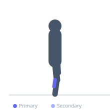

Exercise guide / Standing Calf Raise on Wedge Board
Standing Calf Raise on Wedge Board
A standing calf raise performed with the heels elevated on a wedge board, which pre-loads the ankle into dorsiflexion before the plantarflexion movement begins. The wedge position places the calf under a greater stretch at the bottom of each repetition and is used in Achilles tendinopathy rehabilitation to bias the soleus and reduce the range demands at the ankle compared to a full-range step calf raise. The wedge reduces the risk of tendon overloading while still providing therapeutic loading.
Primary muscles
gastrocnemius medial
gastrocnemius lateral
Secondary muscles
soleus
Equipment
No Equipment (Bodyweight)


Starting position
- Stand with both heels on the elevated end of a 15-25 degree wedge board, toes on the lower end. This places the ankle in partial dorsiflexion as the starting position. Hold a wall or bar for balance.
Setup
- A foam or wooden wedge board angled between 15-25 degrees is ideal. Alternatively, place a folded mat or wedge under the heels. The steeper the wedge, the more dorsiflexion pre-load.
Steps
- Step 1: Stand on the wedge with heels elevated, feeling the initial calf stretch from the wedge position.
- Step 2: Rise onto the balls of the feet to full plantarflexion.
- Step 3: Hold the top position briefly.
- Step 4: Lower slowly back to the wedge starting position. The wedge provides the dorsiflexion range; do not go below it.
Coaching cues
- Press through the big toe knuckle at the top of each rep
- Slow on the way down — 3 seconds minimum for the lowering phase
- Keep the knees straight (for gastrocnemius emphasis) or slightly bent (for soleus emphasis)
Breathing
- Exhale as you rise onto the toes. Inhale as you lower.
Range of motion
- Full plantarflexion at the top. Bottom position is defined by the wedge surface — do not force below it.
Tempo
- 2s rise, 1s top hold, 3s slow eccentric lower
Common mistakes
- Letting the heels drop off the back of the wedge — stay on the wedge surface at all times
- Using partial range at the top — press to full plantarflexion
- Rushing the eccentric — the slow lowering is the therapeutic component
Safety
- The wedge reduces the risk of Achilles tendon overload compared to step calf raises, but loading should still be progressed gradually under physiotherapy guidance for rehabilitation
- Ensure the wedge is stable and cannot slide
Training
- endurance: 10–20 reps
- strength: 8–12 reps
- endurance: 2–3 sets
- strength: 2–3 sets
- Rest: {'endurance': 60, 'strength': 90}